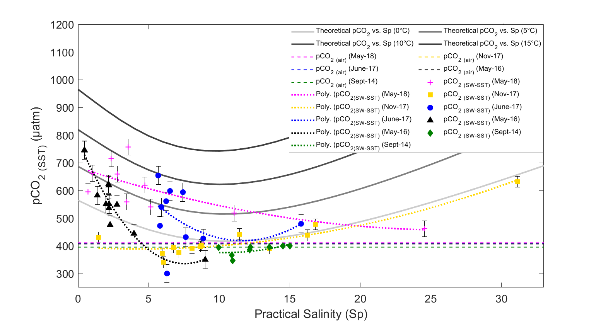

| Louise Delaigue | about work blog contact |
PhD CandidateChanging marine carbon cycle in the infrequently sampled southern Indian and Pacific Oceans. |
I am currently involved in a joint PhD programme with the NWO-NIOZ Royal Netherlands Institute for Sea Research and Utrecht University., under Dr. Matthew Humphreys.
